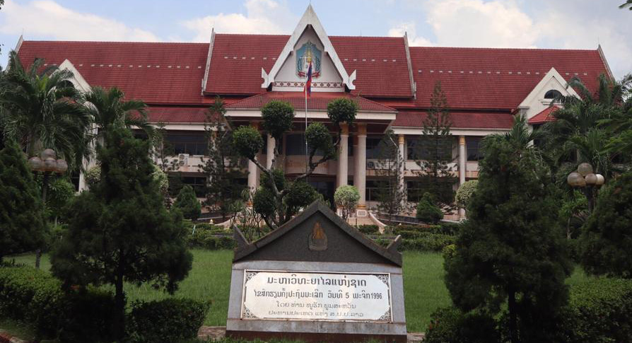

-
ແນະນຳໂດຍຫຍໍ້

-
ພາກວິຊາຮຽນມີທັງໝົດ 5 ພາກ ແລະ 1 ສູນຄື:
ຄະນະວິທະຍາສາດທຳມະຊາດ (ຂຽນຫຍໍ້ວ່າ “ຄວທ”) ເປັນຄະນະວະຊາໜື່ງ ທີ່ສັງກັດໃນໂຄງປະກອບການຈັກຕັ້ງ ຂອງມະຫາວິທະຍາໄລແຫ່ງຊາດ, ມີພາລະບົດບາດເປັນເສນາທິການໃຫ້ແກ່ອະທິການບໍດີ ໃນການຈັດຕັ້ງການຮຽນ-ການສອນ ສາຂາວິຊາວິທະຍາສາດທຳມະຊາດ ເພື່ອສ້າງນັກ ວິຊາການ, ນັັກຄົ້ນຄວ້າ ວິທະຍາສາດ, ການອະນຸລັກ ແລະ ສົ່ງເສີມສີລະປະວັດທະນະທຳອັນດີງາມຂອງຊາດ ກໍຄືຂອງປະຊາຊົນບັນດາເຜົ່າ ແລະໃຫ້ການບໍລິຫານທາງດ້ານວິຊາການແກ່ສັງຄົມ.